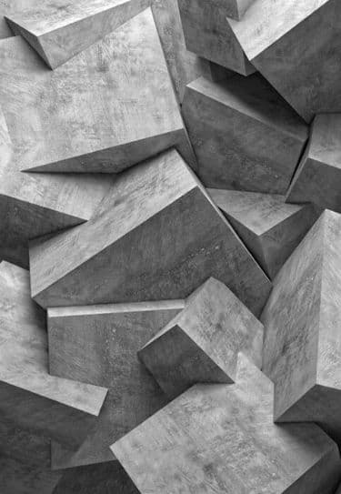
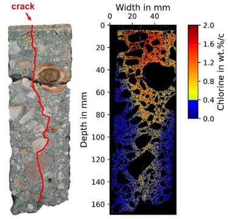

Cement
Cement production accounts for 8% of global CO2 emissions and global efforts are in progress to make this industry more sustainable. Green technology of LIBS plays an important role in approaching this viewpoint by optimization of the processing of raw materials, clinker and cement. . For example, clinker quality is determined by related phases (C₃S, C₂S, C₃A, C₄AF) and the main advantage of Spectoshimatsu LIBS systems is online analysis of crushed clinkers over processing units versus time-consuming XRF laboratory analysis. This rapid in-situ characterizations provides the optimized cost-effective production alongside the substantial energy savings.
Real-time quantitative measurements of three key oxide ratios of lime saturation factor (LSF or KH), silica modulus (SM), and iron modulus (IM) are highly desirable during quality control of cement production. LIBS analyzers can be used in classification of different types of cements based on different oxide levels of CaO, SiO2, Fe2O3,Al2O3, Na2O, MgO, …. The minor elements of cement K, Ti, Mn, Sr, etc. could be detected by acceptable level of LODs. Furthermore, homogeneity of the cement samples is to be evaluates by the Spectoshimatsu LIBS scanners.
Cement concentration in concrete is decisive in its quality factors such as durability, permeability, and workability. As the important factor in maintenance of concrete structures, spectrochemical in-situ assessment of the cementitious contents and other critical elements are completed by monitoring and quantifying chlorides (Cl), carbon(C), alkalis (Na and K) and sulfates (SO4). Spatially resolved LIBS scanners are the best adaptable methods for detecting the corrosions, evaluating compressive strength and nondestructive testing (NDT) of concrete reinforced structures.

